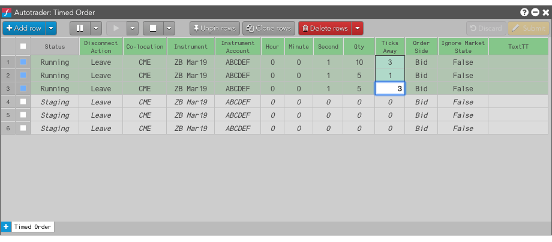
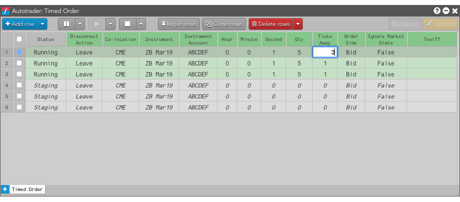
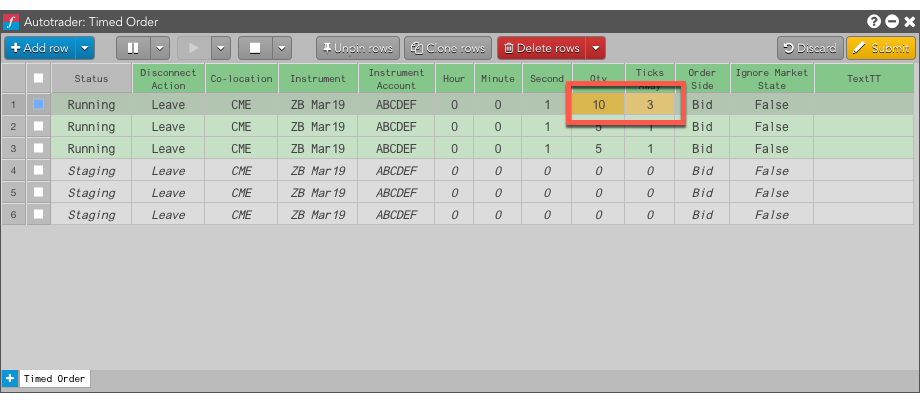
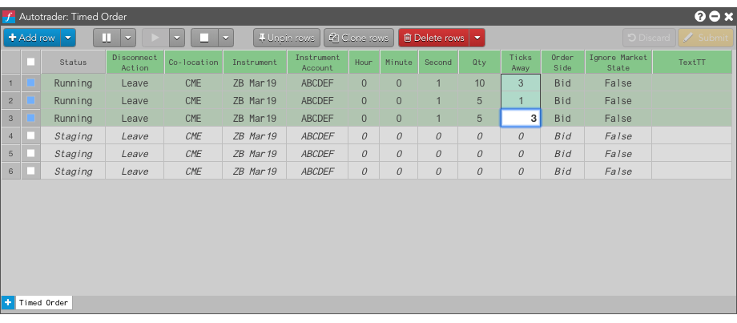

Note: You cannot change the instrument, co-location, or ignore market state values of a working algo order.
You can modify working algos in Autotrader by changing the values of algo variables in of one or more of the algo rows.
To change a single variables for working algo instances:

Note: You cannot change the Instrument, Co-location, Disconnect Action or Ignore Market State values of a working algo order.
To change the same variable value in multiple algo instances:

Note: You cannot change the instrument, co-location, or ignore market state values of a working algo order.